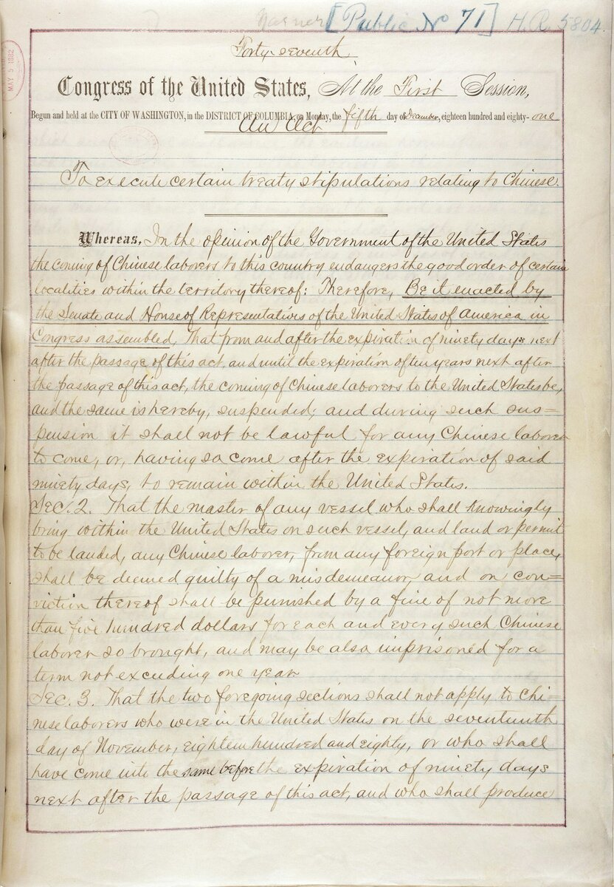

C2 · American History
Immigration and the Making of Modern America
Every wave has been declared the one that could not be absorbed. The argument has been made in almost identical words for a hundred and seventy years, which is a fact about the argument.
Reading
Play the audio and follow along, then read it again on your own. Tap or hover over a highlighted word to see what it means.
The United States describes itself as a nation of immigrants, and the phrase is doing at least two things at once. It is a reasonably accurate account of where most Americans came from, and it is a piece of flattery that quietly excludes the people who were already there and the people who arrived in chains. A story that begins with a voluntary crossing has already left out the two populations with the oldest claims on the country.
Set that aside and the remaining history has a pattern so regular that it is worth stating as a pattern first and arguing about afterwards. Each major wave of arrivals has been met with the claim that this group, unlike the earlier ones, cannot be assimilated: that its religion is incompatible with republican government, that its loyalty lies elsewhere, that it will depress wages and raise crime, and that the previous waves — now reclassified as the good immigrants — were different.
The Irish arriving after the famine were the first to receive the full treatment, and the objections were explicitly religious: a Catholic population was said to owe its allegiance to a foreign sovereign and therefore to be incapable of self-government. The party organized around that proposition won control of several state legislatures in the 1850s. Chinese laborers, recruited for the railroads and the mines, were then excluded by name in 1882, in the first federal law to bar a group defined by nationality. By the 1910s the target was southern and eastern Europe, and the argument had acquired a scientific vocabulary: eugenics supplied skull measurements and intelligence testing supplied the rest.
That vocabulary produced the most consequential immigration law in American history. The 1924 act set quotas by national origin, calculated deliberately from the census of 1890 rather than a recent one, because 1890 predated the arrivals the law was designed to stop. It is an unusually clean example of a statute whose technical machinery is the whole of its intent. The quotas held for forty years, and they were still in force in the late 1930s, when they did a specific and documented harm to people attempting to leave Europe.

The repeal in 1965 is where the pattern becomes most instructive, because its sponsors were quite clear about what they expected. The Hart-Celler Act replaced national-origin quotas with preferences for family reunification and skills, and its supporters assured Congress that the ethnic composition of American immigration would not be substantially altered. They were comprehensively wrong. Family preference compounded across networks, the sending regions shifted from Europe to Latin America and Asia, and the demographic character of the country changed more than any immigration law before it had managed. The lesson is not that the sponsors were dishonest. It is that they were sincere, confident, in possession of the relevant expertise, and mistaken.
What does the pattern prove? Less than its users generally want. That a prediction of unassimilability has been made repeatedly and has repeatedly proved wrong is a strong reason to treat the next one sceptically, but it is not a demonstration that no such prediction could ever be right. Circumstances differ; the scale, the speed, the labor market and the receiving institutions are not constants. An argument from historical pattern is an argument about prior probability, and anybody who presents it as a proof has overstated it.
What the record does establish is narrower and still substantial. It establishes that the confident prediction of cultural incompatibility has an exceptionally poor track record; that the groups declared unassimilable were, within two or three generations, indistinguishable from the population that had declared them so; that assimilation ran in both directions, since the receiving culture was altered as much as the arriving one; and that the laws passed in the panic outlasted the panic and did damage that was neither intended nor repaired.
There is one more thing the history settles, and it is the part most often skipped. The question of how many people a country should admit is a genuine political question on which reasonable people differ, and it is not answered by any of the above. The question of whether a particular group of human beings is capable of becoming American has been asked a dozen times, answered in the negative by serious and respectable people on every occasion, and found to be wrong every single time. Those are two different questions, and the first is debased by being conducted in the language of the second.
Key Vocabulary
- flattery praise that is not entirely deserved
- in chains as a prisoner or an enslaved person
- a claim on a right to something
- to assimilate to absorb into the main body of a society
- incompatible with unable to exist together with
- allegiance loyalty owed to a ruler, country or cause
- to depress to push downwards
- to reclassify to put into a different category
- a famine an extreme and widespread shortage of food
- a proposition a statement put forward for acceptance
- to bar to forbid entry to
- eugenics the discredited movement to improve a population by controlling who reproduces
- consequential having important results
- a quota a fixed limited number permitted
- to predate to come before in time
- a statute a written law passed by a legislature
- repeal the official cancellation of a law
- reunification the bringing back together of a family or a country
- to compound to grow by building on its own results
- demographic relating to the structure of a population
- sceptically with doubt rather than acceptance
- prior probability how likely something is before the specific evidence is examined
- to overstate to claim more than the evidence supports
- indistinguishable impossible to tell apart
- to debase to lower the quality or dignity of
Immigration and the Making of Modern America — C2 · American History · Renan the Teacher, English Language Academy · https://renangrossi.github.io/englishclasses/reading/c2/immigration-and-modern-america.html
Interactive Exercises
Practice
Complete each exercise, then click Submit to see your score and an explanation for every answer.
Speaking & Writing
Discussion
There are no right answers here — use these to practice speaking, or write a short answer to each.
- The essay says the 1965 sponsors were sincere, expert and wrong. How should that affect your confidence in expert prediction about policy?
- Is "a nation of immigrants" worth keeping as a phrase, given what the author says it excludes?
- The author insists the pattern establishes a prior probability rather than a proof. Is that distinction respected in public debate?
- "Assimilation ran in both directions." What evidence of that can you see in a country you know well?
- Write about 300 words setting out the strongest honest version of an immigration argument you disagree with.